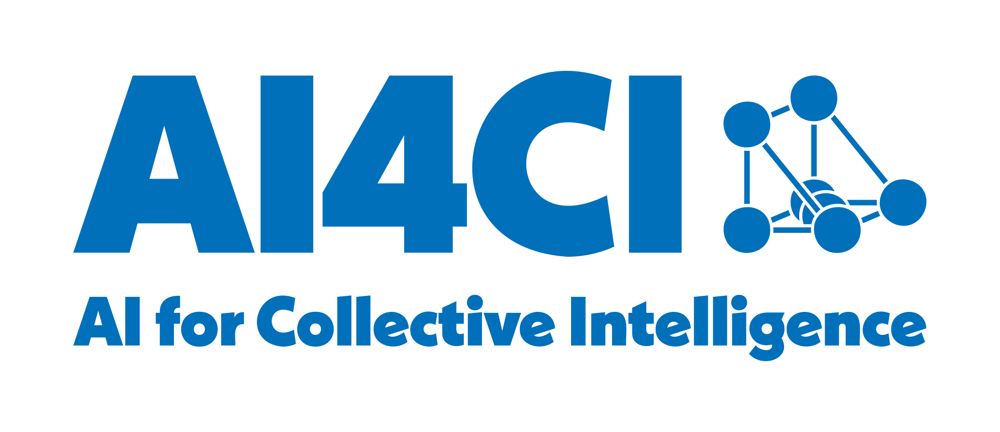

<!-- AI4CI mark in the bottom-left corner of every slide.
     The UCL logo sits bottom-right, placed there by revealjs' own `logo:`
     option, so this deliberately mirrors it rather than using the shared
     slides-footer.html, which is centred and also carries CASA and is used
     by six other decks. -->
<div class="ai4ci-corner-logo">
  
</div>

<style>
  .ai4ci-corner-logo {
    position: fixed;
    bottom: 12px;
    left: 18px;
    z-index: 4;
    opacity: 0.75;
    pointer-events: none;
  }
  .ai4ci-corner-logo img {
    height: 50px;
    width: auto;
    display: block;
  }
  /* The mark is blue, which muddies on the saturated purple title slide
     and drops out of the dark section dividers. Render it white on any
     slide with a background colour, matching the UCL logo. */
  .ai4ci-corner-logo.on-dark img {
    filter: brightness(0) invert(1);
  }
</style>

<script>
(function () {
  // Shown on every slide, including the title. Divider slides, if the deck
  // grows any, hide it - the treatment the UCL logo gets in the other decks.
  function update() {
    if (typeof Reveal === 'undefined' || !Reveal.getCurrentSlide) return;
    var cur = Reveal.getCurrentSlide();
    var hide = cur && cur.classList && cur.classList.contains('divider-slide');
    var el = document.querySelector('.ai4ci-corner-logo');
    if (!el) return;
    el.style.display = hide ? 'none' : '';
    // Any slide carrying a background colour: the title slide and, since
    // the deck gained them, the section dividers.
    el.classList.toggle('on-dark',
      !!(cur && cur.hasAttribute && cur.hasAttribute('data-background-color')));
  }
  function attach() {
    if (typeof Reveal === 'undefined' || !Reveal.on) { setTimeout(attach, 50); return; }
    Reveal.on('ready', update);
    Reveal.on('slidechanged', update);
    update();
  }
  attach();
})();
</script>
